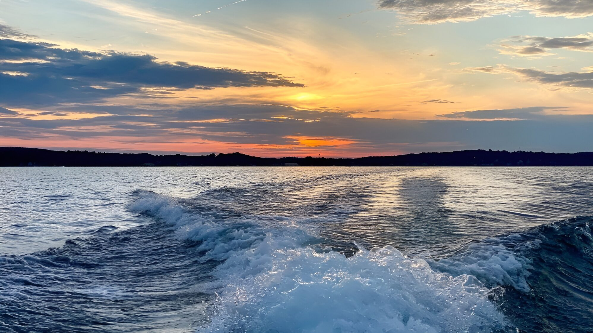
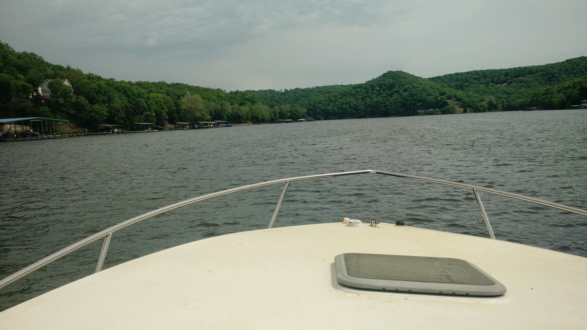

- 
- 
Lake Veterans
We have been serving the Lake of The Ozarks for 30 years! That means you get the best service possible from experienced mechanics, who prioritize getting you and your boat out on the water on your schedule.
Keep an eye out for our bright green trucks as we travel around the lake!
Competitive Excellence
After 30 years, we remain as one of the few boat repair businesses not tied into a marina. This allows for increased mobility and removes the need for predatory marina fees to pay for overhead.
This also means there’s no need to drive your boat to a marina, we will come to you!
Premiere Care
The Boat Docs remains a major competitor at the lake for one good reason, quality. How many times have you hired a mechanic, and when you returned found greasy hand prints, keys in the wrong place, and generally amateur mistakes? Not so, with our doctors.
Let us put our 30 years of experience to work for you, and never suffer from a sloppy mistake again!